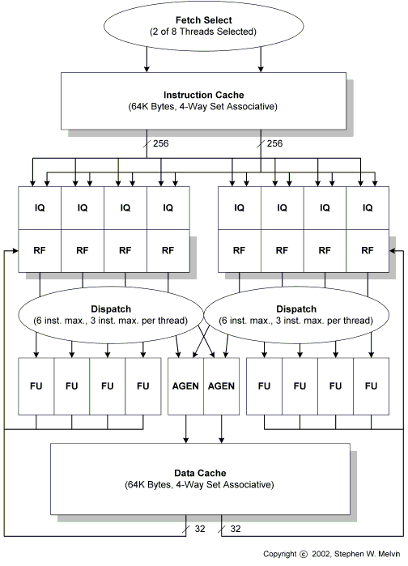

Clearwater Networks CNP810SP
Simultaneous Multithreading (SMT) Core

Overview
The processing core of Clearwater's network processor, the CNP810SP, is shown above.
This core incorporates Dynamic Multistreaming (DMS), or Simultaneous Multithreading (SMT)
capabilities, whereby eight threads execute simultaneously, utilizing a variable number
of resources on a cycle by cycle basis. In each cycle anywhere from zero to three
instructions can be executed from each of the threads depending on instruction dependencies
and availability of resources. The maximum instructions per cycle (IPC) of the entire core
is ten.
In each cycle two threads are selected for fetch and their respective program counters (PCs)
are supplied to the dual-ported instruction cache. Each port supplies eight instructions,
so there is a maximum fetch bandwidth of 16 instructions. Each of the eight threads has
its own instruction queue (IQ) which can hold up to 16 instructions.
The two threads chosen for fetch in each cycle are the two that have the fewest number of
instructions in their respective IQs. Each of the eight threads has its own 31 entry
register file (RF). Since there is no sharing of registers between threads, the only
communication between threads occurs through memory.
The eight threads are divided into two clusters of four for ease of implementation.
Thus the dispatch logic is split into two groups where each group dispatches up to six
instructions from four different threads. Eight function units are grouped into two
sets of four, each set dedicated to a single cluster. There are also two ports to
the data cache that are shared by both clusters. A maximum of 10 instructions can be
dispatched in each cycle. The function units are fully bypassed so that dependent
instructions can be dispatched in successive cycles.
For Futher Reading
Various Historical Multithreaded Machines and Research
- 1970: I/O Processor of the CDC 6600 (J. Thornton)
- 1981: Denelcor HEP-1 (B. Smith)
- 1984: Denelcor HEP-3 (aka Vulture) (S. Melvin, B. Smith
(unpublished, but acknowledged in: Thistle, M. and Smith, B. A Processor
Architecture for Horizon, 1988))
- 1988: Supercompting Research Center Horizon Project (J. Kuehn, B. Smith)
- 1990: Tera Computer System (R. Alverson, D. Callahan, D. Cummings, B. Koblenz, A. Porterfield, B. Smith)
- 1991: Multiple Instruction Stream Processors (Section 7.2.1), pp. 126 - 128 (Ph.D. Dissertation, S. Melvin)
- 1994: Performance Tradeoffs in Multistreamed Superscalar Architectures (Ph.D. Dissertation, M. Serrano)
- 1994: Multistreamed Superscalar Processors (W. Yamamoto, M. Nemirovsky)
- 1995: Simultaneous Multithreading (D. Tullsen, S. Eggers, H. Levy)
- 1999: Compaq Alpha EV-8 (21464) (J. Emer)
- 2001: Clearwater (XStream Logic) CNP810SP
- 2001: Sun SMT Processor
- 2001: Intel Hyperthreading
- 2003: Massive Multithreading (S. Melvin, M. Nemirovsky, E. Musoll, J. Huynh, R. Milito, H. Urdaneta, K. Saraf)
Clearwater Networks
XStream Logic, Inc. was founded in 1998 by Mario Nemirovsky, Adolfo Nemirovsky, Narendra Sankar and
Ron Barr. The company was established to develop a network processor utilizing multithreading
technology. XStream Logic closed series A financing in 1999 and in late 2000 a series B financing
round was closed. The company changed its name to Clearwater Networks in early 2001.
In April of 2002, after a series of downsizings, the board resolved to
dissolve the company. Alas, the company never taped out the CNP810SP.
About the Author
From March 2000 through April 2001, Stephen Melvin, Ph.D.
was a Senior Architect at Clearwater Networks (formerly XStream Logic, Inc.). Dr. Melvin was responsible
for the architecture and microarchitecture of the processing core.